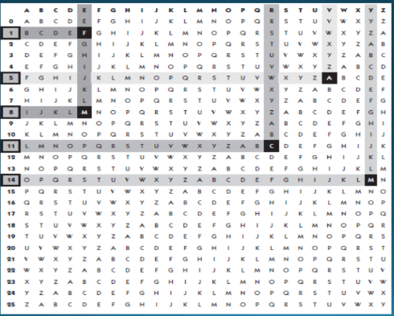

I det her forløb har vi lært om hvordan man kan kryptere normal tekst og dekryptere krypteret tekst. Vi har blandt andet haft om hvordan man kan bruge den polyalfabetiske-substitutions-metode "vigenere" til at kryptere eller dekryptere en tekst (se tabel til højre). Vi har blandt andet brugt hjemmesiden dcode.
